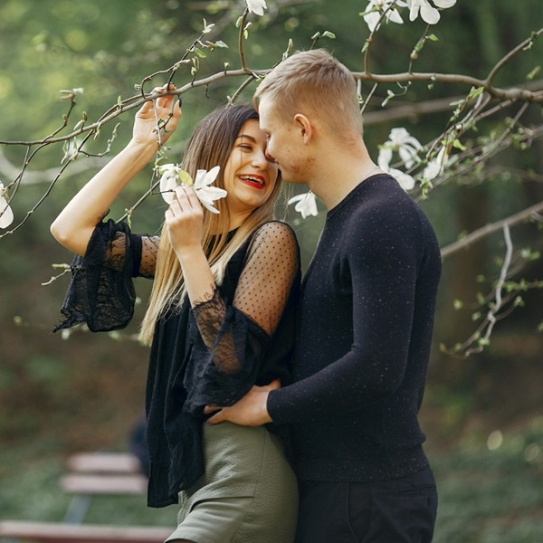
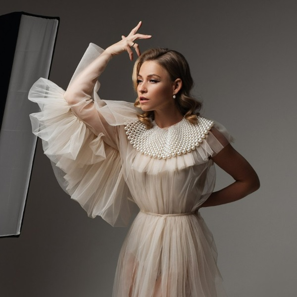

~ PORTFOLIO ~


At BacktoFotos, we specialize in freezing those fleeting moments in time that hold immense significance for you. With our passion for photography and keen eye for detail, we transform ordinary moments into extraordinary memories.
Whether it's a milestone event, a candid portrait, or the breathtaking beauty of nature, we strive to encapsulate the essence of every moment, ensuring that your cherished memories last a lifetime. Trust us to capture the magic of your life's journey, one frame at a time.
At BacktoFotos, we offer a range of professional photography services tailored to meet your unique needs. With a commitment to excellence and creativity, we strive to exceed your expectations, delivering captivating visuals that tell your story with authenticity and passion.
Our portrait sessions are designed to showcase your personality and style in stunning imagery.
Embrace the beauty and miracle of new life with our maternity and newborn photography sessions.
Cherish the bond of family with our custom-designed playful candid moments and portrait sessions.

BacktoFotos' maternity and newborn sessions captured the most precious moments of our lives with such tenderness and care. From the anticipation of pregnancy to the joy of welcoming our little one, every photo tells a story that we'll cherish forever. Thank you for creating beautiful memories for our family!


This blog post delves into the importance of storytelling in photography and how BacktoFotos approaches capturing emotion and narrative in their work. Readers will discover the techniques and strategies used by professional photographers to evoke emotion, convey meaning, and create compelling visual narratives that resonate with viewers on a deep level.
At BacktoFotos, we believe every photograph should tell a story. Whether it's the subtle glance between two people in love, the unbridled joy of a child's laughter, or the quiet dignity of a seasoned face — each frame we capture is a chapter in someone's larger narrative. Our approach goes beyond mere composition and lighting; we invest time in understanding our subjects, their journeys, and the emotions they wish to preserve.
Professional photography is as much about technical mastery as it is about emotional intelligence. Our team employs cutting-edge equipment and post-processing techniques, but the real magic lies in the moments we choose to capture. We study the interplay of light and shadow, the geometry of spaces, and the rhythm of human interaction. This holistic approach ensures that every image we deliver doesn't just document a scene — it transports you back to that exact moment, complete with all its feelings and nuances.
Looking ahead, we are excited to expand our services into new realms of visual storytelling. From cinematic short films to immersive 360-degree virtual tours, BacktoFotos is committed to staying at the forefront of the visual arts industry. We invite you to join us on this journey — whether you're celebrating a milestone, building your brand, or simply wanting to freeze a beautiful moment in time, we are here to help you see your story through a new lens.



